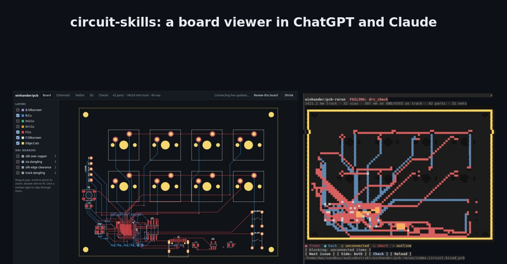
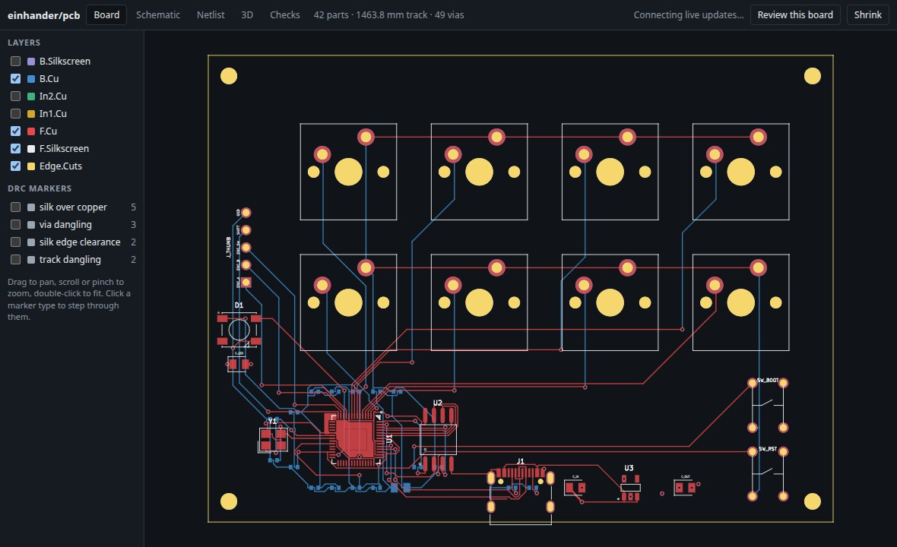
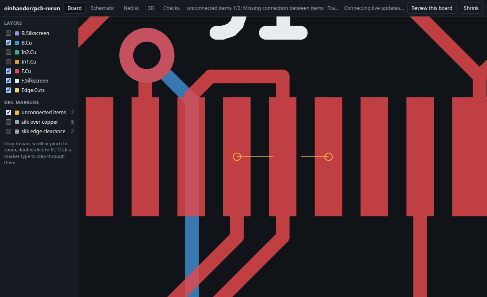
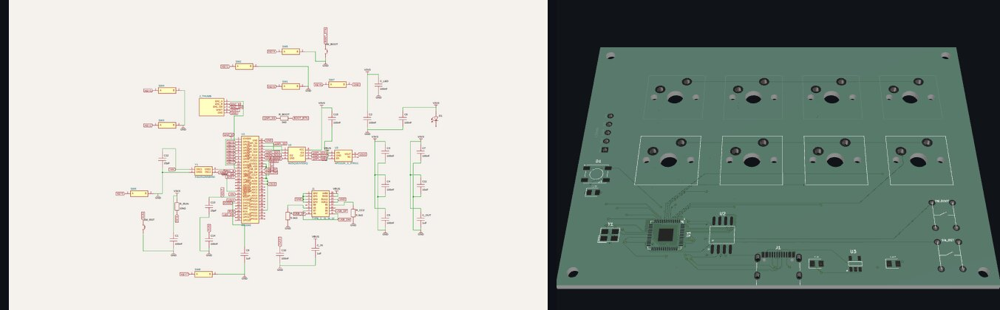
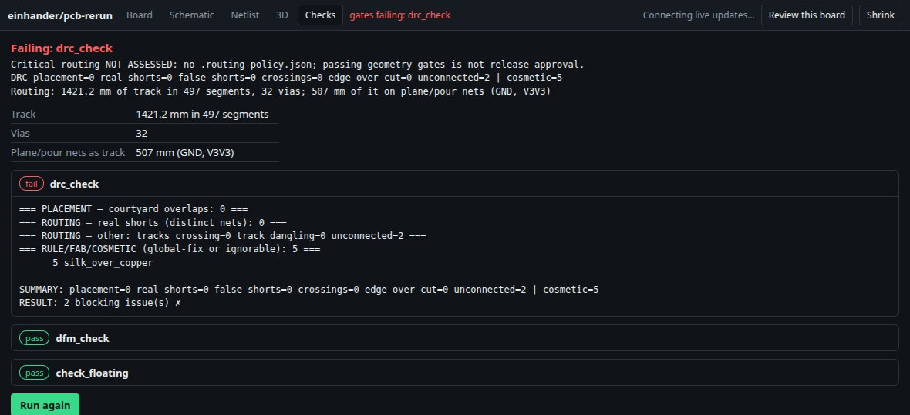
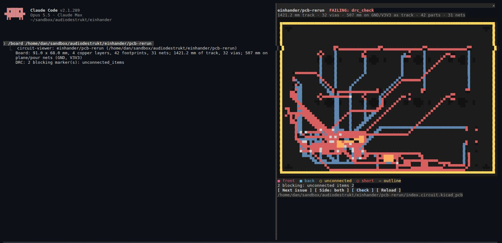

circuit-skills is how we design printed circuit boards with an agent: the circuit is code, placement is code, a router does the copper, and a set of checks decides whether the board is done. Until now it was skills and scripts. The agent ran them, read their output, and we looked at the board in KiCad when something went wrong. Today it ships in two new forms: a Codex plugin for the ChatGPT desktop app, and a Claude Code mod. Both add the thing that was missing, a view of the board inside the conversation, and both give the agent the same checks the pipeline uses.

01 / Why a viewer, and not text-to-board
The hard part of a board is not drawing it, it is knowing whether it is right. Our einhander re-run made that concrete. A router reported success while a net was missing, an export mirrored three capacitors, and our own check printed "CLEAN" with open nets. Every one of those showed up as DRC markers on the routed board; what found them was reading those markers, on the board, next to a verdict we trust. That is what these plugins put in front of you and the agent: the board that will actually be fabbed, the markers on it, and the gates' verdict.
02 / What you get in ChatGPT (Codex)
A viewer with five tabs, opened from the sidebar, beside a conversation, or by clicking a .kicad_pcb or .circuit.tsx file in your workspace.

Board is the routed KiCad board, layer by layer. Inner planes start hidden, because a solid plane hides everything else. Every DRC marker sits on the copper it names. The types that block fabrication (shorts, crossings, open nets, clearance) are shown; the cosmetic ones are listed but hidden. Click a type to step through its markers:

Schematic and Netlist come from the tscircuit design, and the netlist filters by net, part or pin. 3D is KiCad's own model of the routed board, orbitable.

Checks runs the pipeline's gates and says plainly what is failing:

The agent gets three tools: open_board, check_board and get_netlist. The viewer also tells the agent what is open and what the last check found, so "review the board I have open" works without paths. It refreshes on its own when the board file is saved, keeping your tab, zoom and layer choices.
03 / What you get in Claude Code
A pane docked beside the conversation, drawn by a Claude Code mod. In a terminal it draws the board in coloured half-block characters, so it works in any terminal, not only ones that can show images. On Claude's desktop and editor surfaces it is written to draw an SVG instead.

That capture is a real session: /board on the einhander re-run, with no model call involved. The mod draws the board from its own geometry: front and back copper, pads, vias, holes and the outline. Open nets are drawn in orange, with a line between the two ends. Buttons step through the issues and zoom to them, switch between front and back, rerun the checks and reload. The pane redraws when the board is saved, and the status line keeps the verdict in view. The model gets the same three tools as in Codex.
04 / Install
Both need Node.js 18+, KiCad 9+ with kicad-cli on the path, and Python 3 for the checks. The schematic and netlist need tscircuit installed in the project (npm install there). Nothing to build: the bundled files are committed.
ChatGPT desktop / Codex, from a clone of punkfab/circuit-skills:
codex plugin marketplace add /path/to/circuit-skills
codex plugin add circuit-skills@circuit-skillsThen quit the app completely and reopen it. Closing the window is not enough: the app keeps a background server running, and that server only reads the plugin list when it starts. This caught us out on day one. Circuit viewer then appears in the sidebar. To update after a pull: codex plugin marketplace upgrade, remove and re-add the plugin, and quit and reopen again. Tested with Codex 0.157.
Claude Code, for one session:
claude --plugin-dir /path/to/circuit-skills/claude/circuit-viewerOr for every session, including Claude Desktop's Code tab (which now has an official Linux beta), add it to ~/.claude/settings.json:
"env": { "CLAUDE_CODE_PLUGIN_DIRS": "/path/to/circuit-skills/claude/circuit-viewer" }Then /board ~/your-project/pcb, or ask Claude to open a board. The skills themselves (pcb-layout, circuit-sim, pcb-enclosure-fit, pcb-3d-render) come with the Codex plugin; for Claude Code, link them into ~/.claude/skills/ as before.
05 / How it works
One backend, two front ends, and no new opinions about the board. Every view is made by the same tools the pipeline uses: kicad-cli exports each layer and the 3D model and runs DRC, tsci exports the schematic and netlist. The verdict comes from pcb-layout's own gate scripts, run unchanged:
drc_check: DRC sorted into placement problems, real shorts, crossings, copper over the edge, and open nets. Open nets block; until this week they did not.dfm_check: what the fab checks and KiCad's DRC does not, such as hole-to-hole spacing and via drill and annular ring.check_floating: pads reached only by copper on the other side of the board.check_critical_routing: for boards with a routing-policy file, the declared USB, Ethernet and crystal nets are screened for layer use, vias, length and reference copper, and engineering review notes must match the current board. Without a policy, the viewer says critical routing is not assessed, so passing the other three is not read as release approval.
The track, via and plane-copper figures come from a small reader for KiCad's board file. It matches KiCad's own numbers exactly on einhander (1463.8 mm of track, 49 vias), so neither front end needs KiCad's Python module. The layer images are exported in board coordinates, which is why each DRC marker lands exactly on the copper it is about.
The Codex plugin is an MCP app: a local server the app starts, and a single self-contained viewer page that asks the server for each view as you open its tab. The Claude mod runs inside Claude Code, where it cannot install anything or even learn its own folder. So it carries the backend with it: a 39 kB bundle, gate scripts included, which it runs with node by piping in the source. There is no install location and nothing to configure.
06 / Built by two agents
Most of this was written by agents, in two different apps. Claude, in Claude Code, built the Codex plugin, the Claude mod and their tests. The tests run every tab in a real browser against the real server, and they caught a bug a real host would have hit: the project picker used a form, which ChatGPT's sandbox does not allow to submit. Meanwhile Codex, working inside ChatGPT on a board of its own (the ArtNode re-drive), opened two pull requests against the same repository. The first added live refresh, an optional FastRoute router, and a fix for pad positions on rotated parts, which the checks had been computing with the wrong rotation direction. The second added the critical-routing gate. Both landed after tests, and the new gate runs in both front ends.
07 / Limits
- The schematic is tscircuit's automatic layout: complete, but busy. Pan and zoom make it usable.
- KiCad's 3D export has no part models for tscircuit footprints, so the 3D view is the board and its copper.
- The terminal picture is coarse at narrow widths: a wider pane shows more.
- Routing gaps still exist. On einhander, Freerouting leaves two nets open; the viewer shows them, it does not fix them.
- The plugin is not in the Codex directory; it installs from the repository. Tested on Linux only.
- The Claude mod has been run in a terminal; its desktop drawing (the SVG) has not been seen in Claude Desktop yet.
- The critical-routing gate needs KiCad's Python module, which only the system Python has.
Everything is open at punkfab/circuit-skills, with the full history of how it got here. Have a board you want routed, checked and seen before it is ordered? Start a project →